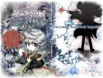

- Welcome to Touhou Wiki!
- Please register to edit. For assistance, check in with our Discord server or IRC channel.
JynX
Jump to navigation
Jump to search
| JynX | |
|---|---|
| Notable from |
the Len'en Project, PC-98 remakes |
| Circle(s) | |
| Occupation |
Programmer, Game Director, Game Producer, Character Designer, Illustrator, Game Designer, Music Composer |
| Art Example |
 |
| Music Example |
Arranged Faint Dream ~ Inanimate Dream from Lotus Land Story |
| Websites | |
JynX is a Japanese game developer who has become well known for their remakes of stages from the PC-98 Touhou Project games although these stages are usually only shown as teaser videos and never actually released to the public. They are also the creator of the Len'en Project, a series of games inspired from the Touhou Project, which they have released to the public for free download.
Works[edit]
[edit]
(Note: NicoNico requires an account to be able to see videos.)
- Re:Mystic Square. Nico link (Youtube mirror). Released on April 1st 2011, features Stage 6 with Yumeko and Shinki.
- Re:Mystic Square EX. Nico link(Youtube mirror). Released on December 25th 2011, features the Extra Stage with Alice Margatroid.
- Re:Lotus Land Story. Nico link (Youtube mirror). Released on March 31st 2012, features Stage 6 with Yuuka Kazami
- Re:Lotus Land Story EX. Nico link (Youtube mirror). Released on December 24th 2012, features the Extra Stage with Mugetsu and Gengetsu.
- Re:The Phantasmagoria of Dim. Dream. Nico link (Youtube mirror). Released on March 31st 2013, features 4 stages, against Ellen, Kana Anaberal, Chiyuri Kitashirakawa, and Yumemi Okazaki.
- Re:The Phantasmagoria of Dim. Dream EX. Nico link (Youtube mirror). Released on December 24th 2013, a gag Extra Mode featuring 3 stages, against Yuuka, Shinki, Rin Satsuki.
- Re:the Story of Eastern Wonderland. Nico link(Youtube mirror). Released on March 31st 2014, features Stage 5 with Mima.
- Re:the Story of Eastern Wonderland EX. Nico link (Youtube mirror). Released on December 24th 2014, features the Extra Stage with Rika and Evil Eye Sigma.
- Re:Highly Responsive to Prayers. Nico link (Youtube mirror). Released on March 31st 2015, features Stages 16-20 (Makai Route) with Sariel.
- Contribution to the 7th Annual Touhou Nico Dousai event. Nico link (Youtube mirror). Released on June 28th 2015, an "Extra+α" playthrough, recycles various elements from JynX's Brilliant Pagora or Haze Castle (as seen in the HUD and stage-driven gameplay with random events) and the previous PC-98 videos; features Yuuka, Mima, and Shinki as midbosses, and Rin Satsuki as boss.
- Re:Highly Responsive to Prayers. Nico link (Youtube mirror). Released on December 25th 2015, it re-visits HRtP, this time showing Stages 16-20 (Hell Route) with Konngara.
Len'en Games[edit]
- 鏈縁无現里 〜 Evanescent Existence (Len'en Wiki's entry)
- 鏈縁蛇叢釼 〜 Earthen Miraculous Sword (Len'en Wiki's entry)
- 鏈縁霊烈傳 〜 Reactivate majestical imperial (Len'en Wiki's entry)
- 連縁天影戦記 ～ Brilliant pagoda or haze castle (Len'en Wiki's entry)
Touhou Fangames[edit]
- 束方 恋宴戦記 (unreleased)
- 束方 嘘時空 ～ Fools_rush_in
Doujin Touhou Albums[edit]
Additional Information[edit]
- JynX has a reputation of using an underscore rather than an ordinary space when writing English words (compare Brilliant_pagoda_or_haze_castle to the correct Brilliant pagoda or haze castle on their blog).
See also[edit]
- Len'en Wiki's entry for JynX